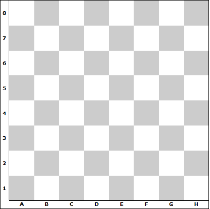
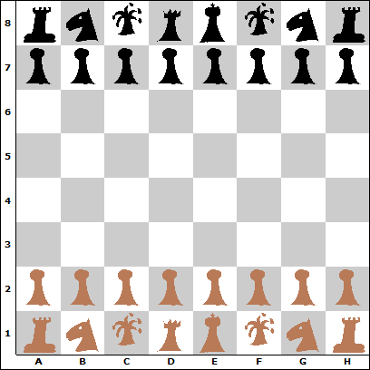

TP 1 : technologies côté client
Objectifs pédagogiques du TP
- Se familiariser avec les principaux langages de description de documents utilisés côté client : (X)HTML, XML, CSS, XSL, SVG
- Avoir un aperçu des autres technos disponibles et savoir les intégrer dans une page Web
Outils
- Logiciels installés sur les machines de TP :
Navigateurs Web, éditeur de texte, Editeur HTML WYSIWYG (Microsoft Frontpage ou autre), Altova XMLSpy
- Logiciel libre que vous pouvez installer chez vous : éditeur HTML + validateur XML : HTML-Kit (http://www.chami.com/
ou copie locale accessible ici)
+ plugin XML Validator (menu Tools/Install/Install Plugin)
- Tutoriels : voir partie "Liens utiles" de la page d'accueil du cours
- Ressources : site d'Open Source Web Design,
qui propose des feuilles de style CSS à télécharger
Préambule
Créez un répertoire "TP1", dans lequel vous archiverez tous les fichiers à rendre dans ce TP. Créez un deuxième répertoire temporaire, dans lequel vous effectuerez les manipulations demandées (merci de ne placer dans "TP1" que les fichiers dont le rendu est demandé).
HTML et XHTML
Ouvrez, éditez et corrigez cette page Web. Itérez jusqu'à ce qu'elle soit sémantiquement correcte et valide en XHTML 1.0.
- Dans les différentes sections de votre CV, identifiez (i.e. spécifiez un attribut id) les éléments importants de votre bloc principal (par exemple, les titres de niveau 2 ou 3, les items de liste ou les lignes d'un tableau).
- Dans le bloc de menu de chaque section, créez des sous-menus qui pointent vers les fragments correspondants de la section courante
- Vérifiez-en le bon fonctionnement
Indications
- Ajout de liens internes
Notion de lien vers un fragment
Définition : Un fragment est un élément ou un sous-arbre constitué par un élément et ses sous-éléments. Lorsque'un fragment est identifié par l'attribut id d'un élément, on peut définir des liens vers ce fragment, plutôt que la totalité de la section qui le contient. Pour cela, il suffit de rajouter le caractère "#" (dièse) à la fin de l'URL, suivi de l'id de l'élément visé. Cela indique au navigateur qu'il doit défiler dans la page pour que cet élément se retrouve en haut de l'écran (si possible).
Exemple : l'ancre de lien <a href="#fragments"> permet de se positionner dans cette section (voir code source de la page).
- Vérifiez l'affichage de ce document sur les navigateurs installés sur votre machine et validez ce document avec le validateur du W3C : http://validator.w3.org/.
- Éditez votre document avec XMLSpy uo Notepad++ et validez-le avec l'outil de validation de XMLSpy puis avec celui du W3C. Corrigez les erreurs jusqu'à obtenir un document valide.
- Sauvegardez ce fichier dans un répertoire "XHTML" de "TP1".
CSS
Création
- Reprenez le CV en XHTML et rajoutez-y une référence à une feuille de style "CV.css".
- Écrivez cette feuille de style (à faire chez vous).
- Spécifiez les marges de la page et positionnez la photo à côté d'une zone de texte (aide : positionnement flottant sur W3Schools)).
- Réenregistrez ces deux fichiers (XHTML et CSS) dans le dossier "XHTML"
Dynamisation de l'interface avec JavaScript
Dans cette partie, vous allez faire en sorte de n'afficher que la section demandée par l'utilisateur. Pour cela :
- créez une classe de style permettant de cacher ces blocs à l'aide de la propriété visibility et attribuez-les aux différents éléments que vous aurez à masquer/afficher dans la page
- créez des fonctions JavaScript permettant de faire apparaître et disparaître un élément
- insérez ces fonctions dans l'en-tête de la page dans un élément <script type="text/javascript">...</script>
- interceptez le clic sur les éléments du menu à l'aide de l'attribut onclick et déclenchez les fonctions JavaScript correspondantes en leur passant en paramètre les id des blocs correspondants
XML
Pour commencer, récupérez le contenu du répertoire contenant les fichiers de ce premier TP, et copiez-le sur votre compte. Ouvrez les fichiers CV_a_corriger.xml et CV.dtd dans XMLSpy.
À l'aide des outils de vérification syntaxique et grammaticale, corrigez le document XML pour qu'il soit bien formé et valide par rapport à sa DTD (n'oubliez pas de ré-enregistrer ce document après chaque modification).
Une fois ce document bien formé et valide, renommez-le en "CV.xml", et remplissez-en la structure avec les mêmes données que celles du document XHTML de la question précédente. Une fois cette manipulation faite, vérifiez que le document est toujours bien formé et valide et sauvegardez-le avec sa DTD dans un
répertoire "XML".
DTD
Recopiez la DTD sous un autre nom, et modifiez cette copie pour que :
- d'autres étudiants que des M1 IF puissent écrire leur CV conformément à cette DTD
- il existe deux types de rubriques (éléments Rubrique1 et Rubrique2)
qui correspondent respectivement aux rubriques (Formation et Experience),
et (Competences
et Divers)
; séparez
les différents types de contenus en fonction de cette distinction.
Exemple
de structure XML attendue :
<Rubrique1>
<Item1>
<Date>...</Date>
<Contenu>...</Contenu>
</Item1>
</Rubrique1>
<Rubrique2>
<Item2>
<SousTitre>...</SousTitre>
<Contenu>...</Contenu>
<Contenu>...</Contenu>
</Item2>
</Rubrique2>
XSL
- Reprenez votre fichier "CV.xml". Écrivez une feuille de
style XSLT qui permet de transformer ce fichier en un fichier XHTML
ressemblant à votre première version sauvegardée dans "XHTML". Pour
cela, procédez incrémentalement (à chaque étape, utilisez l'outil de
transformation d'XMLSpy pour générer le fichier XHTML et visualiser le
résultat) :
- générez un fichier XHTML vide (minimal conforme à la
DTD)
- rajoutez une requête XPath pour récupérer le titre de
ce document et l'insérer dans le fichier généré
- définissez les principaux templates de votre feuille de
style et rajoutez-les dans la structure de votre arbre cible (avec
uniquement des titres) et vérifiez qu'ils s'insèrent bien dans l'arbre
cible au bon endroit et autant de fois que nécessaire
- rajoutez du contenu XHTML pour les templates
- faites de même pour les templates inclus dans les les
templates principaux, etc.
- Sauvegardez votre feuille de style XSLT dans un répertoire
"XSLT".
SVG
Créez un dossier "SVG" dans votre répertoire de rendu de TP, dans lequel vous travaillerez pour cette question. À l'aide du pointeur de W3Schools sur SVG, utilisez l'outil de création SVG de XMLSpy pour réaliser une figure simple : créez un nouveau document, et choisissez le type SVG. Insérez un ou plusieurs éléments disponibles dans la palette "Elements" (à droite) dans la partie taggée "your graphic here" de votre document.
Visualisez le résultat avec Firefox (IE n'intègre pas en
standard de visualisateur SVG...).
Faites ensuite une nouvelle page Web dans laquelle vous incluerez votre document SVG. Modifiez votre document pour qu'il représente un échiquier semblable à l'image ci-dessous. Rajouter à votre page le texte qui s'impose et faites en sorte que l'échiquier se redimensionne si vous redimensionnnez la page.

JavaScript
Rajoutez un bouton qui lance une fonction pour positionner dynamiquement les pièces comme sur l'image suivante.

Les images contenant les pièces se trouvent dans le sous-répertoire "pieces" du dossier contenant cette page.
Rendu du TP
- Récupérez le fichier "Rendu.xsd"
- Créez un fichier "contenu.xml" valide selon ce schéma et
décrivant les contenus du répertoire "TP1"
- Placez ce fichier à la racine de votre répertoire "TP1" et
zippez l'ensemble du répertoire
- Renommez votre fichier .zip : MIF13_TP1_NomEtd1_NomEtd2.zip
- Déposez le fichier zippé sur Spiral Connect, dans le module "Rendu MIF13"
Attention :
Vérifiez bien que les lien entre les différents fichiers que vous allez rendre ne font pas référence à votre système de fichiers propre.
Pour la première partie : inutile de rendre vos fichiers HTML intermédiaires : tout ce qui n'est pas en XHTML ne sera pas noté